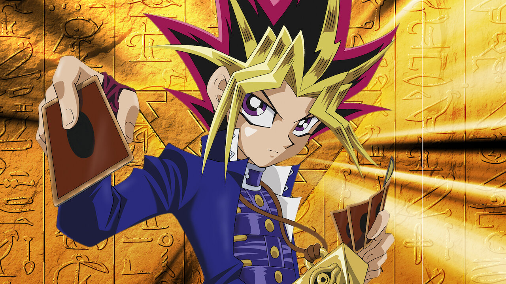

Importância da Qualidade de Vida
Yu-Gi-Oh! é uma franquia icônica que começou como um mangá criado por Kazuki Takahashi e se expandiu para anime, jogos de cartas e videogames. A história gira em torno de Yugi Mutou, um jovem tímido que resolve o enigmático Quebra-Cabeça do Milênio, despertando um alter ego poderoso que adora desafios e duelos. O Yu-Gi-Oh! Trading Card Game, publicado pela Konami, é a versão real do jogo Duel Monsters apresentado na série. Com o tempo, a franquia cresceu e ganhou spin-offs como Yu-Gi-Oh! GX, 5D’s, ZEXAL, ARC-V, VRAINS, entre outros.
O Yu-Gi-Oh! Trading Card Game é um dos jogos de cartas colecionáveis mais populares do mundo, publicado pela Konami. Ele permite que os jogadores construam decks estratégicos e duelam usando Monstros, Magias e Armadilhas para reduzir os Pontos de Vida do oponente a zero. O jogo tem uma cena competitiva forte, com torneios oficiais como o Yu-Gi-Oh! World Championship e eventos locais organizados por lojas especializadas. Os jogadores podem comprar boosters para expandir seus decks e encontrar cartas raras.